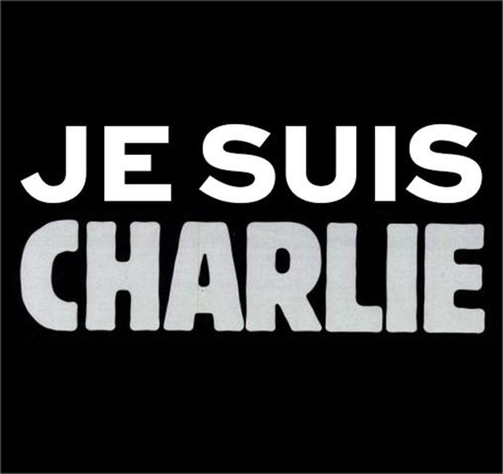
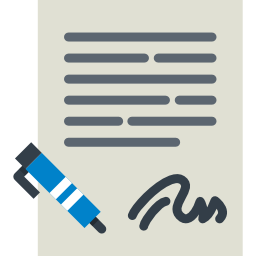
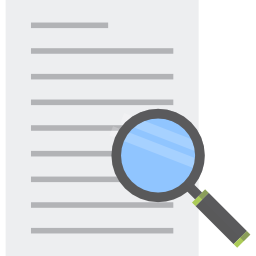

- 14 mai 2013
- 6 juin 2013
- 22 juin 2013
- 31 juillet 2013
- 14 avril 2014
- 1 oct 2014
- Janvier 2015
- 18 mars 2015
- 19 mars 2015
- 9 avril 2015
- Avril 2015
- 14 avril 2015
- 15 avril 2015
- 19 avril 2015
- 28 avril 2015
- 30 avril 2015
- 5 mai 2015
- 9 juin 2015
- 18 juin 2015
- 20 juin 2015
- 23 juin 2015
- 25 juin 2015
- 23 juillet 2015
- 13 mai 2016
- 21 oct 2016
- 18 janv 2017
- 1 nov 2017
-

14 mai 2013
Loi - Premier rapport du député Urvoas qui pose les bases de la future loi.
-
6 juin 2013
Affaire Snowden - Snowden rend publiques des informations classées top-secrètes de la NSA concernant la captation des métadonnées des appels téléphoniques aux États-Unis, ainsi que les systèmes d’écoute sur internet.
-
22 juin 2013
Affaire Snowden - Edward Snowden est inculpé par le gouvernement américain sous les chefs d’accusation d’espionnage, vol et utilisation illégale de biens gouvernementaux.
-

31 juillet 2013
Affaire Snowden - Edward Snowden obtient l’asile temporaire en Russie. Le 1er aout, une autorisation par la Russie de rester 3 ans sur le territoire.
-

14 avril 2014
Affaire Snowden - Le Guardian et le Washington Post obtiennent le prix Pulitzer pour la publication des révélations sur le système de surveillance de la NSA.
-
1er octobre 2014
Loi - L’Agence France-Presse fait état d'une présentation du projet de loi destinée à être présentée l'année d'après.
-

7-9 Janvier 2015
Environnement - Attentats de Janvier 2015 : des sources font état de l’accélération du chantier de la loi.
-
18 mars 2015
Loi - Une première version du projet de loi fuite par 01.net.
-
19 mars 2015
Loi - Présentation officielle du projet de Loi par M.Valls, il sera examiné par le parlement en "procédure accélérée". Manuel Valls précise que ce projet de loi est le « résultat d’un travail approfondi » et qu'il vise à « renforcer les moyens d’action des services spécialisés de renseignement » et « garantir le respect des libertés publiques et de la vie privée ».
-

9 avril 2015
Controverse - Une pétition contre la loi est lancée, relayée par Libération par le politologue Thomas Guénolé et la communicante Katerina Ryzhakova.
-

13 – 16 avril 2015
Loi - 434 amendements sont déposés par les députés. Discussion en séance publique les 13, 14, 15 et 16 avril 2015.
-
14 avril 2015
Controverse - Un collectif d'entreprises du net s'oppose à la loi #niEspions#NiPigeons. Ce collectif est « contre la surveillance généralisée d’Internet » jugée « inefficace » et « dangereuse pour la croissance »66,67. Le collectif comptait 942 organisations signataires le 12 mai.
-
15 avril 2015
Loi - Les députés adoptent la partie du texte sur la surveillance sur Internet.
-
19 avril 2015
Controverse - F.Hollande annonce sur Canal+ qu'il saisira le Conseil constitutionnel pour répondre aux inquiétudes.
-
28 avril 2015
Controverse - Les co-initiateurs déposent le texte de la pétition à Matignon. Elle recueille plus de 119 000 signatures.
-
30 avril 2015
Controverse - 62 parlementaires saisissent le Conseil Constiutionnel à leur tour.
-

5 mai 2015
Loi - L'ensemble du texte est adopté à l'Assemblée Nationale en première lecture par 438 voix contre 86 (42 abstentions).
-

9 juin 2015
Loi - Examen en première lecture par le Sénat. 227 amendements ont été déposés par les sénateurs16 préalablement à la discussion publique les 2, 3 et 4 juin et au vote solennel le 9 juin 2015.
-
18 juin 2015
Loi - Une version finale est présentée par la Commission mixte paritaire proposant un amendement à la loi : les étrangers de passage en France peuvent être surveillés par les services de renseignements sans l'avis du CNCTR.
-

20 juin 2015
Loi - L'amendement est supprimé par le gouvernement sous pression de la CNCTR.
-
23 juin 2015
Controverse - La Quadrature du net et la fédération FDN publient un mémoire dans l'objectif d'appuyer la démarche des parlementaires de saisine de Conseil Constitutionnel.
-
25 juin 2015
Controverse - GenerationLibre dépose également un mémoire à l'attention du Conseil constitutionnel dans lequel il considère que les « boîtes noires » prévues par la loi sont la version numérique des « cabinets noirs » de l'Ancien Régime et demande la censure de la loi pour violation du secret des correspondances.
-
23 juillet 2015
Loi - Le Conseil constitutionnel valide l’essentiel de la loi.
-
13 mai 2016
Controverse - Les « Exégètes Amateurs » déposent une QPC sur les mesures de « surveillance hertzienne » de la Loi Renseignement. L'argumentaire défendu soulignait le manque de proportionnalité dans le champ d'application de ce type de surveillance ainsi qu'une atteinte disproportionnée à la vie privée et au secret des correspondances.
-
21 octobre 2016
Controverse - Le Conseil Constitutionnel considère comme « non-conforme » ces mesures. Il donne au gouvernement un délai de 14 mois pour retirer ces mesures.
-
18 janvier 2017
Affaire Snowden - La Russie prolonge le droit d'asile de Snowden de trois ans (jusqu'en 2020).
-
1er novembre 2017
Loi -La première boite noire est activée.